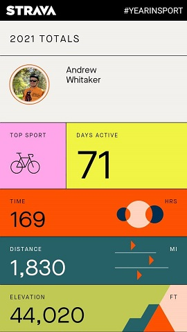
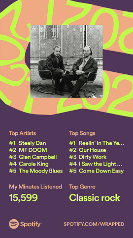

Andrew Whitaker


Here are my results from various apps' year summaries, of which it seems there are more and more every year.

This may have been my most active year so far, due to the not one but two long trips I took this year. During the work week I was fairly sedentary, but there is always more room for improvement!

An interesting year for my Spotify Wrapped, since I spent most of my indoor working from home time listening to analog media. Many of these tracks were either played in the car or in anticipation of records I had on the way.
I managed to be in the top 1% for Steely Dan, which I suspect was the result of comparing the Spotify version of Can’t Buy a Thrill to my lucky record store find.